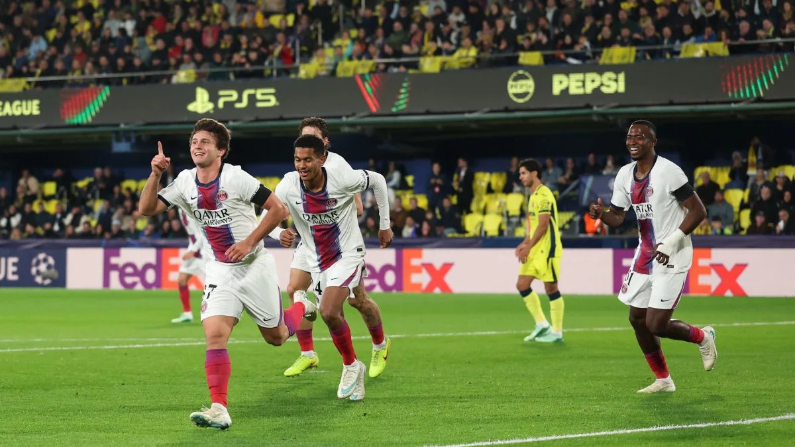
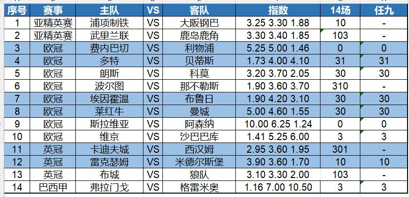

昨天曼联让二追三，宝哥任九任九命中头奖，14场命中二等奖，今晚竞盘火线继续约~~~
昨晚欧冠联赛，曼联主场在0-2落后的情况下，连追三球，成为当晚最受关注的比赛。苏莱的进球和马伦的点球破门，早早让罗马客场2-0领先，但下半场B费点球扳回一球，库亚尼3分钟内梅开二度，帮助曼联最终拿到了3分。主教练卡里克又熬过一场比赛。
另一场焦点赛事，是拜仁客场2-0完胜马竞技。上半场两队0-0战平，但下半场卡尔和莱默的进球帮助拜仁客场全身而退。
还有卫冕冠军大巴黎客场6-0狂扫西甲球队比利亚雷亚尔。6个进球由5名球员打进，显示出大巴黎强大的攻击群。四场欧冠比赛，打进20球，如此的进攻能力冠绝当今世界足坛。

今天14场是欧冠英冠亚冠等。第一场关注欧冠联赛，莱比锡红牛主场迎战曼城。莱比锡红牛双线作战，欧冠1胜2负，表现属于正常，德甲中5胜3负排名第四。曼城赛季初联赛一路狂飙，但近期陷入低迷，英超两连败，客场1-2不敌维拉，主场0-1惜败布莱顿，英联杯也是90分钟内与布莱顿2-2逼平。这样的状态做客，让我们对曼城捏把汗。防个冷门吧。
第二场关注英冠第14轮，排名第19的雷克瑟姆主场迎战领头羊米德尔斯堡。上赛季米德尔斯堡一路杀入了英冠升级附加赛决赛，但最后功亏一篑，0-1输给了赫尔城。本赛季，米德尔斯堡卷土重来，13轮过后8胜4平1负排名榜首，仅在赛季初客场遗憾遭布莱克本逆转。随后米德尔斯堡11轮不败。这次面对排名靠后的雷克瑟姆，我认为米德尔斯堡不会放过扩大领先优势的机会。
以下是今天的14场和任九初步观点，祝大家好运——

14场：10、103、0、31、30、310、30、30、0、3、301、10、103、3
任九：-、-、0、31、30、-、30、30、0、3、-、10、-、3
欢迎大家收藏宝哥首页，请分享给好友或转发到朋友圈，让更多人看到我。
安卓用户可以下载APP，更便捷看到宝哥每天的动态！